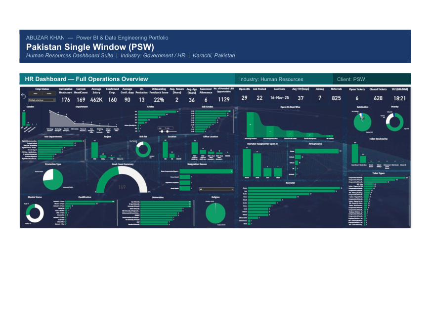
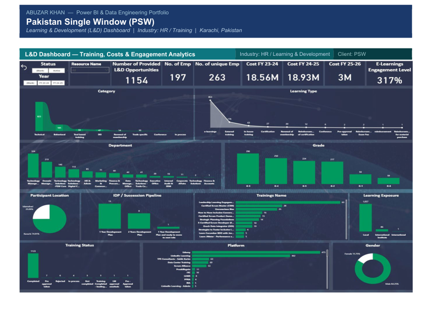
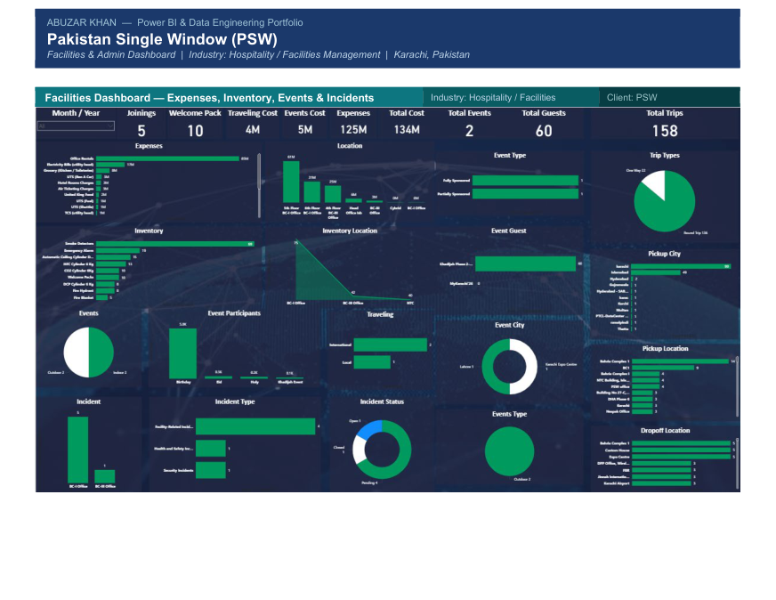
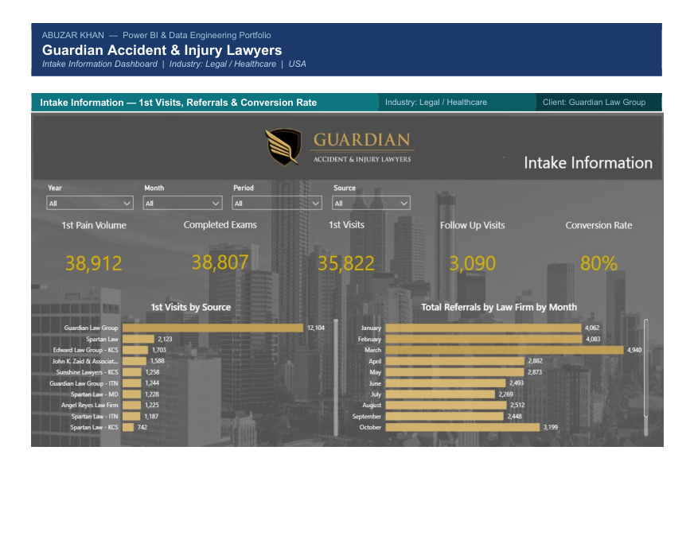
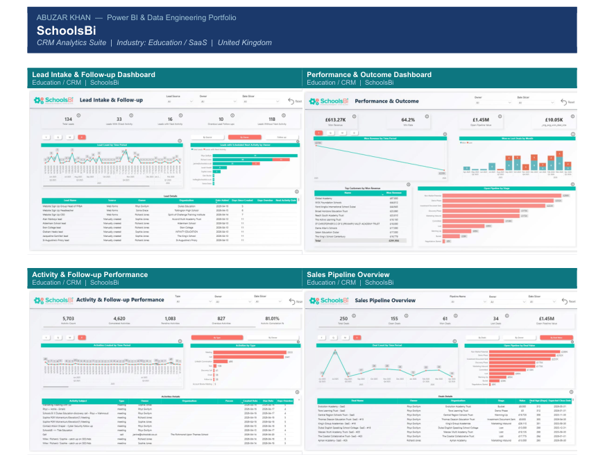
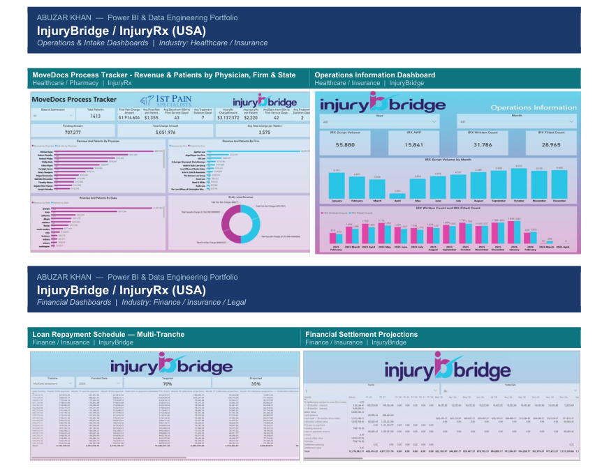
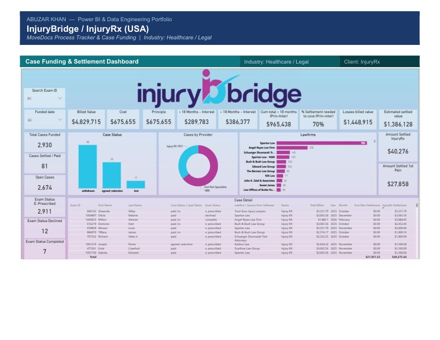
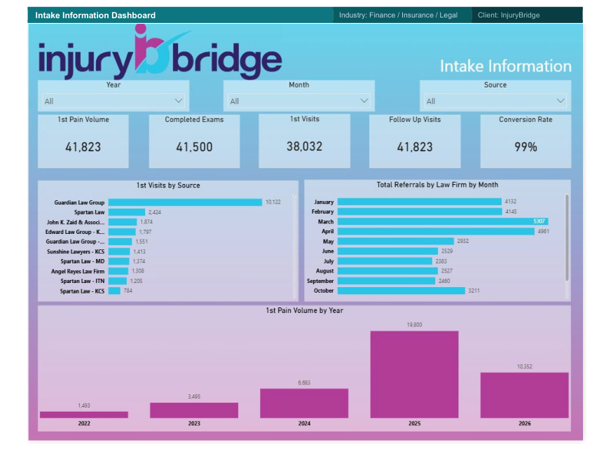
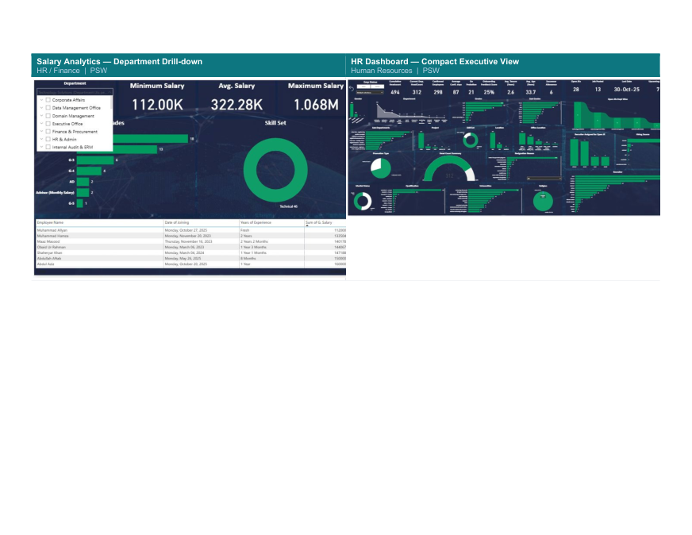

Turning complex data into clear decisions.
I'm Abuzar Khan, a Senior Data Engineer and Power BI Architect focused on building useful analytics experiences, operational dashboards, and reliable data solutions across business domains.
Projects & dashboards
A selection of dashboard work from the portfolio PDF. Select any project card to view its portfolio page at a larger size.

HR Operations & Salary Analytics
Executive overview, headcount, salary analytics, and department-level drill-down reporting for Pakistan Single Window.

Training & Engagement Dashboard
Learning and development reporting focused on training activity, costs, and engagement.

Facilities & Admin Dashboard
Operational view of expenses, inventory, events, and incidents for facilities management.

Intake & Conversion Analytics
Intake information reporting for first visits, referrals, and conversion rate for a legal-services organization.

CRM Analytics Suite
A five-dashboard suite covering lead intake, follow-up, performance and outcomes, sales pipeline, and organization overview.

Operations & Intake Dashboards
Operational reporting and intake views for InjuryBridge / InjuryRx, including process and patient-related reporting.

Loan Repayment & Settlement Projections
Financial dashboards for repayment schedules and settlement projections across multiple tranches.

MoveDocs Process Tracker & Case Funding
Process-tracking and case-funding dashboard work for healthcare and legal workflows.

Department Salary Drill-down
A focused view designed to help explore salary information by department alongside the wider HR dashboard suite.
Data foundations. Business context. Useful reporting.
What I work on
I build analytics and reporting solutions that help teams understand performance, follow operational activity, and explore business information. My portfolio spans public-sector HR, education CRM, healthcare and insurance operations, finance, and legal services.
Core areas
Certificate of Appreciation — Pakistan Single Window
Recognized by Syed Aftab Haider, CEO of Pakistan Single Window, for leadership in developing the HR Power BI dashboard.
Have a reporting or data challenge?
I'm interested in opportunities where data engineering, Power BI, and analytics can help teams make better-informed decisions. Reach out by email or connect with me on LinkedIn.